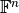
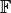

DiscretizedSpace¶
-
class
odl.discr.discretization.DiscretizedSpace(uspace, dspace, sampling=None, interpol=None)[source]¶ Bases:
odl.discr.discretization.DiscretizedSet,odl.space.base_ntuples.FnBaseAbstract class for discretizations of linear vector spaces.
This variant of
DiscretizedSetadds linear structure to all its members. TheDiscretizedSet.uspaceis aLinearSpace, theDiscretizedSet.dspacefor the data representation is an implementation of , where  is someField, and bothDiscretizedSet.samplingandDiscretizedSet.interpolationare linearOperator‘s.Attributes
complex_dtypeThe complex dtype corresponding to this space’s dtype.complex_spaceThe space corresponding to this space’s complex_dtype.domainDomain of the continuous space. dspaceSpace for the coefficients of the elements of this space. dspace_typeData space type of this discretization. dtypeData type of each entry. element_typeDiscretizedSpaceElementexamplesReturn example functions in the space. fieldScalar field of numbers for this vector space. implUnderlying implmentation type for the dspace. interpolationOperator mapping an n-tuple to a uspaceelement.is_cnTrueif the space represents C^n, i.e. complex tuples.is_rnTrueif the space represents R^n, i.e. real tuples.is_weightedTrueif thedspaceis weighted.real_dtypeThe real dtype corresponding to this space’s dtype.real_spaceThe space corresponding to this space’s real_dtype.samplingOperator mapping a uspaceelement to an n-tuple.shapeShape (size,)of this space.sizeNumber of entries per tuple. uspaceUndiscretized/continuous space of this discretization. weightingThis space’s weighting scheme. Methods
__contains__(other)Return other in self.__eq__(other)Return self == other._dist(x1, x2)Raw distance between two elements. _divide(x1, x2, out)Raw pointwise multiplication of two elements. _inner(x1, x2)Raw inner product of two elements. _lincomb(a, x1, b, x2, out)Raw linear combination. _multiply(x1, x2, out)Raw pointwise multiplication of two elements. _norm(x)Raw norm of an element. astype(dtype)Return a copy of this space with new dtype.available_dtypes()Available data types for this space type. contains_all(other)Test if all elements in otherare contained in this set.contains_set(other)Test if otheris a subset of this set.default_dtype([field])Return the default data type for a given field. dist(x1, x2)Return the distance between x1andx2.divide(x1, x2[, out])Return the pointwise quotient of x1andx2element([inp])Create an element from inpor from scratch.inner(x1, x2)Return the inner product of x1andx2.lincomb(a, x1[, b, x2, out])Implement out[:] = a * x1 + b * x2.multiply(x1, x2[, out])Return the pointwise product of x1andx2.norm(x)Return the norm of x.one()Return the element of all ones. zero()Return the element of all zeros.